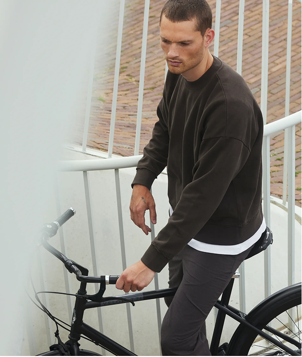

Our women's bicycles are for everyone who likes to combine style with performance. In this range, available are the Café Racer and the Robyn, both frames with a lower tube, making it easy to step through.
Forever Forward.


Caféracer
Women

Robyn
Women

Whether you like it easy or fast, we got both. Our men's range of bicycles combine modern clean design with great quality, so they're perfect for your daily city commute. Our men citybikes are the Caféracer, Caféchaser and the Berlin, but feel free to opt for a women's bike for that easy hop-on- hop-off Amsterdam style.